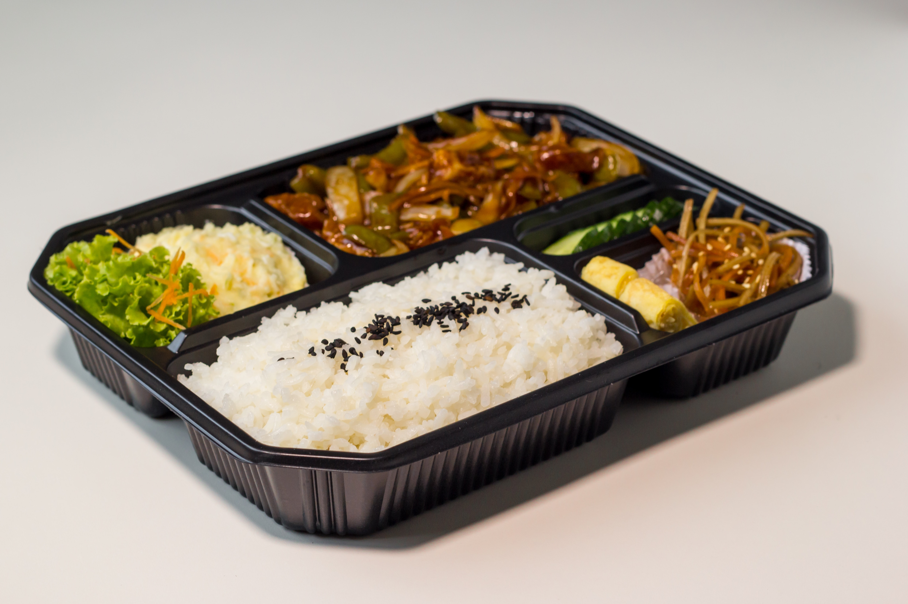

To okusno jed je navdihnjeno italijansko kuhinjo, ki prinaša harmonijo bogatih okusov in sočnosti piščančjega mesa.
Sočni piščančji zrezki, prekriti s kremasto paradižnikovo omako in stopljenim mocarelo sirom, se popolnoma ujemajo s hrustljavim parmezanom na vrhu. Vsak grižljaj razkriva okusno kombinacijo mesa, omake in sira, ustvarjajoč izjemno povezavo tekstur in arom. Ta jed vam bo prinesla občutek zadovoljstva že ob prvem ugrizu.
Ta eksotična juha iz Tajske ponuja popolno združitev pikantnih in osvežujočih okusov. Dišeči začimbe, kot so limonska trava, koriander in ingver, se mešajo s svežo zelenjavo in kremastim kokosovim mlekom, ustvarjajoč bogato in aromatično doživetje.
Vsak požirek te juhe je prava eksplozija okusov, ki vas popelje na potovanje v oddaljene eksotične kraje Tajske.


Grška musaka je klasična jed, ki vas popelje v srce Sredozemlja. Ta slojevita poslastica združuje sočno meso, običajno jagnjetino ali mleto govedino, s krompirjem, melancani in bogato paradižnikovo omako.
se to je prelito s kremasto bešamel omako in pečeno do popolne zlato rjave barve. Vsak grižljaj musake je popolna kombinacija bogatih in polnih okusov, ki vas bodo navdušili.
Meksiške fajitas so okusne jedi, ki združujejo pikantnost, svežino in teksturo v edinstveno kombinacijo. Sočni koščki piščanca, govedine ali zelenjave, skupaj s papriko in čebulo, so začinjeni z tradicionalnimi meksiškimi začimbami, kot so čili, kumina in koriander.
Vse to je zavito v tople tortilje in postreženo z dodatki, kot so guacamole, salsa in kisla smetana. Vsak grižljaj fajitasa je pravi festivalski ples okusov, ki bo prebudil vaša čutila.

Japonski sushi je umetnost, ki združuje svežino, eleganco in natančnost.
Ta nežna jed je sestavljena iz popolnoma pripravljenega kislega riža, oblikovanega v majhne zvitke, napolnjene z svežimi morskimi sadeži, kot so losos, tunina ali kozice.